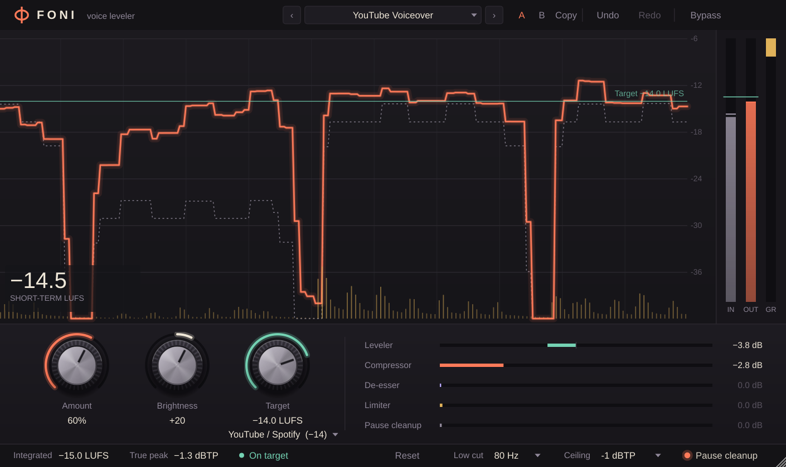
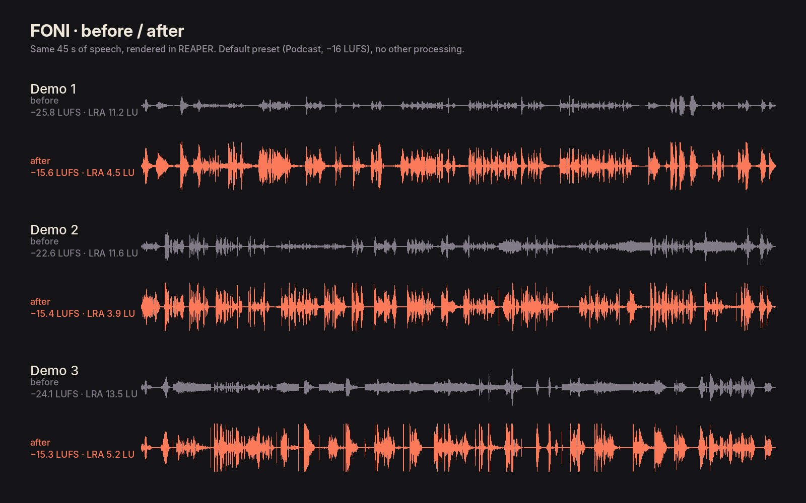
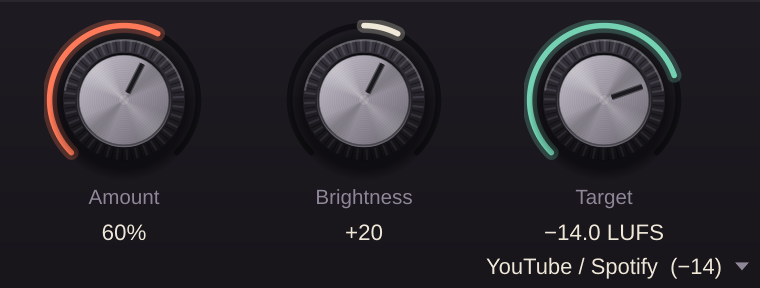

Pick the platform. Turn one knob. Publish.
Most voice chains need six plugins and a loudness meter you have to read. FONI is one plugin that already knows where the voice is going. The live display shows what came in, what goes out and where the target sits, so you can see it working.

Before and after. Same take, one plugin.
Volunteer actors, each recorded at home on a different microphone. Each After clip is the Before clip rendered through the FONI 0.9.3 plugin on its default settings (Target −16 LUFS), nothing else. Press play and flip between Before and After: playback stays in sync.
Remote cast, home mics
Two voices, two levels
Loud lines, quiet lines
Source: LibriVox dramatic reading of Oscar Wilde's The Importance of Being Earnest (public domain). Loudness measured with ffmpeg ebur128. Before clips are untouched, so they play quieter.

Everything else is automatic.
Amount
How much FONI does. Leveling, compression, de-essing and pause cleanup move together, so 50 % is a natural voice and 100 % is radio-tight.
Brightness
Presence and air on one knob. Right for clarity on a dull mic, left for a warmer voice. The de-esser follows, so brighter never means harsher.
Target
Choose Apple Podcasts, YouTube, Speech or Broadcast and FONI lands there, with a true-peak ceiling of −1 dBTP by default. A green dot tells you when you are on target.

Eight stages, tuned for speech.
Each stage knows it is processing a voice. The leveler holds still when nobody is talking, the de-esser listens to the ratio of S to voice instead of a fixed threshold, and the limiter catches peaks between samples.
- Low cut4th-order filter, 60–120 Hz. Rumble, desk thumps and handling noise out.
- LevelerSlow gain riding in LUFS. Lifts quiet passages, brings loud ones down, freezes in pauses.
- Pause cleanupEases the gain down a little between phrases, so room noise and breaths are not lifted with the voice. Opens instantly when you speak. Not a noise reducer.
- CompressorSoft knee, program-dependent release. Body and glue without pumping.
- BrightnessPresence at 4 kHz and an air shelf at 10 kHz on one bipolar control.
- De-esserRelative detection, split-band cut. Works the same on a whisper and a shout.
- Loudness trimLands the output on your chosen LUFS target.
- True-peak limiter3 ms look-ahead with inter-sample peak detection. Never over the ceiling.
Numbers, not adjectives.
Offline test with synthetic speech: ten phrases recorded 26 dB apart, harsh sibilants and room noise in the pauses. Loudness measured with an ITU-R BS.1770 reference meter.
| Measurement | Input | Amount 0 % | Amount 50 % | Amount 100 % |
|---|---|---|---|---|
| Level spread between phrases | 26.0 dB | 16.9 dB | 9.9 dB | 5.1 dB |
| Sibilants relative to vowels | +3.0 dB | +0.9 dB | −0.6 dB | −1.2 dB |
| True peak | n/a | −1.1 dBTP | −1.2 dBTP | −1.3 dBTP |
Works where you work.
Formats
Systems
Built for real sessions
- 9 presets: podcast, radio voice, YouTube voiceover, remote guest, live stream, audiobook, broadcast and more
- A/B compare, undo and redo
- Click-free bypass with latency compensation
- Resizable window, 75–200 %, sharp on any screen
- Validated with pluginval at its strictest level on every build
Install in a minute.
Windows
- Run FONI-0.9.4-Windows-Setup.exe and tick the formats you want.
- VST3 goes to
C:\Program Files\Common Files\VST3, CLAP toC:\Program Files\Common Files\CLAP, the standalone app toC:\Program Files\Revolver Audio\FONI. - If SmartScreen appears, choose More info → Run anyway.
macOS
- Open FONI-0.9.4-macOS.pkg and pick the formats.
- VST3, AU and CLAP go to
/Library/Audio/Plug-Ins, the app to/Applications. - If the installer is blocked, open System Settings → Privacy & Security and click Open Anyway. Step by step.
First use
- Rescan plugins in your DAW, then insert FONI on the voice track, after any noise reduction.
- Pick a preset or a platform under Target (Apple Podcasts −16, YouTube / Spotify −14).
- Play a minute of speech: the output settles on the target and the meter shows On target.
- What does each control do? See the user guide.
Changelog
- 0.9.4 · 18 Nov 2026 · Before button: hear the original at the same loudness as the output (level-matched A/B). ACX view: live RMS, peak and noise floor against the ACX audiobook limits, with a suggested Target when the RMS is out of range. Mac fix: FONI now runs on Intel Macs too; 0.9.1–0.9.3 were built for Apple Silicon only.
- 0.9.3 · 16 Nov 2026 · No more level dips in continuous speech with Pause cleanup on; output lands on the loudness target more precisely, also on noisy recordings; fix for hosts that send fewer channels.
- 0.9.2 · 15 Nov 2026 · AAX left out of the installers until it is signed.
- 0.9.1 · 15 Nov 2026 · Standalone app ships without ASIO for now.
- 0.9.0 · 14 Nov 2026 · First public beta.
Beta testers wanted.
FONI is in public beta and we're looking for experienced ears before 1.0. Try it on your own voice recordings for 15 minutes and tell us what doesn't work: odd sounds, pumping, crashes, confusing controls. Your feedback goes straight into the next version.
Using FONI? Rate it in one click.
Tested it? Two minutes, seven questions.
Rate it, tell us what you liked and what annoyed you. Bugs, crashes and odd sounds are the most useful of all.
- Which DAW and system you used
- What it did well, what it got wrong
- Optional: let us quote you on this page
Free while in beta. Download now.
FONI 0.9 beta is free for Windows 10/11 and macOS 11+. The installer lets you pick VST3, CLAP, AU (Mac) and the standalone app. A Pro version with extra controls will follow; beta users will hear about it first.
New in 0.9.4: Before plays the original at the same loudness as FONI's output, for a fair comparison, and the new ACX view checks RMS, peak and noise floor for audiobooks and suggests the Target. What every control does.
Tried it? Tell us what you think.
New to loudness? Read How to hit −16 LUFS for Apple Podcasts (and −14 for Spotify / YouTube). Recording an audiobook? See How to pass ACX in Audacity with free tools.
Made in Greece by Revolver Audio.